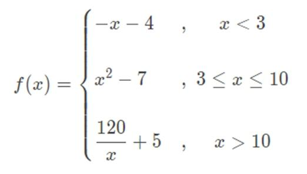

Exercício
Dificuldade
Pontos
Data limite
Créditos
Ficha07_011
Normal
4.0
26/09/2022 16:12:00
(c)M@nso 2021
Fórmula por ramos II
Implemente a função h. O valor de x deve ser introduzido pelo utilizador

Input
Output
1
x : 1.0 f(1.0)= -5.0
3
x : 3.0 f(3.0)= 2.0
4
x : 4.0 f(4.0)= 9.0
10
x : 10.0 f(10.0)= 93.0
15
x : 15.0 f(15.0)= 13.0
120
x : 120.0 f(120.0)= 6.0
2.399
x : 2.399 f(2.399)= -6.399
9.832
x : 9.832 f(9.832)= 89.66822400000001
6.220
x : 6.22 f(6.22)= 31.688399999999994
1.068
x : 1.068 f(1.068)= -5.068
Algorithmi 22.05 Student version (c) Antonio M@nso 2022 Instituto Politécnico de Tomar - All rights reserved